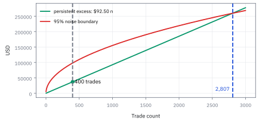

4.2 Linear Independence and Linear Combinations
รู้ได้อย่างไรว่าทิศทางหนึ่งสร้างจากทิศทางอื่น
คุณถือกองทุน A ที่แบ่งเงิน ธนาคาร/พลังงาน/เทค เป็น 60/40/0 และกองทุน B แบบ 20/0/80 โบรกเกอร์เสนอกองทุน C แบบ 40/20/40 ว่าเป็นกองสมดุลตัวใหม่ C ให้ exposure ใหม่จริงไหม?
เฉลย: ไม่ใหม่เลย ครึ่งหนึ่งของ A บวกครึ่งหนึ่งของ B ได้ 40/20/40 พอดีทุกช่อง ถ้าค่าธรรมเนียม A, B, C เป็น 0.80%, 0.60%, 0.90% การถือ A กับ B อย่างละครึ่งจ่ายแค่ 0.70% ถูกกว่า \$20,000 ต่อปีบนเงิน \$10 ล้าน
Linear combination คือการคูณแล้วบวก vector หลายตัว ส่วน linear independence ตรวจว่าไม่มีตัวใดสร้างจากตัวอื่นได้ งานจริงใช้จับกองทุนหรือ factor ที่ซ้ำกันก่อนจ่ายค่าธรรมเนียมหรือสร้าง model
ศัพท์ที่ใช้ในหัวข้อนี้
- linear combination
- การเอา vector หลายตัวมาคูณด้วยจำนวนจริงแล้วบวกกัน ใช้สร้าง portfolio หรือ hedge ใหม่จาก building blocks ที่มีอยู่
- linear independence
- สถานะที่ไม่มี vector ตัวใดเขียนเป็น linear combination ของตัวอื่นได้ ใช้ตรวจว่า trade ใหม่เพิ่มทิศความเสี่ยงใหม่จริง ไม่ใช่ exposure เดิมที่ถูกคูณขนาด
- span
- เซตของ vector ทุกตัวที่สร้างได้จาก linear combination ของชุดตั้งต้น ใช้บอกขอบเขต exposure ที่ desk สร้างหรือ hedge ได้จาก instruments ที่ถือ
- hedge
- position ที่ตั้งใจให้ชดเชยความเสี่ยงของ position อื่น ใช้ลด sensitivity ต่อการเคลื่อนไหวที่ไม่อยากรับ ไม่ใช่แค่เพิ่มจำนวน ticker
- diversification
- การรวม risk drivers ที่ไม่เคลื่อนพร้อมกันทั้งหมด ใช้ลดความผันผวนของ portfolio โดยไม่จำเป็นต้องลดเงินลงทุนทุกดอลลาร์
- factor exposure
- ความไวของ portfolio ต่อ driver ร่วม เช่น Nasdaq growth stocks ใช้แยกว่าหลาย ticker ให้ความเสี่ยงอิสระจริงหรือรับแรงเดียวกันพร้อมกัน
- beta
- ความไวเชิงเส้นของผลตอบแทนสินทรัพย์ต่อผลตอบแทนของตลาดหรือ factor ที่เลือก ใช้วัดว่าขนาด market exposure ของ trade จะเพิ่มหรือลดเมื่อ factor ขยับ
- correlation
- ตัวเลขระหว่าง -1 ถึง 1 ที่วัดว่าผลตอบแทนสองชุดเคลื่อนไหวเชิงเส้นไปด้วยกันมากเพียงใด ใช้คัดกรองว่าหลาย position อาจซ่อน risk direction เดียวกัน แม้ correlation ต่ำก็ยังไม่พิสูจน์ว่า vectors เป็นอิสระ
- leverage
- การทำให้ gross exposure ใหญ่กว่าเงินทุนที่รองรับ ใช้ขยายขนาด bet ทั้งด้านกำไรและขาดทุน จึงต้องแยกจากการเพิ่ม risk direction ใหม่
- alpha
- ผลตอบแทนที่ strategy อ้างว่าได้เกินจาก factor exposures ที่รับอยู่ ใช้แยก skill หรือ signal ออกจากกำไรที่เกิดเพราะตลาดทั้งก้อนขึ้น
- overdetermined system
- ระบบสมการที่มีสมการมากกว่าตัวแปร ใช้เตือนว่าปกติจะไม่มีคำตอบ ถ้ามีคำตอบพอดีแปลว่าข้อมูลบางส่วนซ้ำกัน
- determinant
- ตัวเลขหนึ่งตัวที่คิดจาก matrix จัตุรัส ค่าสัมบูรณ์ของมันคือปริมาตรของกล่องที่มีคอลัมน์เป็นสัน ใช้ตรวจเร็ว ๆ ว่าคอลัมน์เป็นอิสระกันหรือไม่ ได้ศูนย์แปลว่ามีตัวซ้ำ
- expense ratio
- ค่าธรรมเนียมรายปีของกองทุนเป็นเปอร์เซ็นต์ของเงินที่ลงทุน ใช้เทียบต้นทุนของสองทางที่ให้ exposure เดียวกัน
- arbitrage
- การซื้อของหนึ่งและขายของที่ให้ผลเหมือนกันทุกสถานการณ์เพื่อเก็บส่วนต่างราคาโดยไม่รับความเสี่ยง ใช้อธิบายว่าทำไมของที่ซ้ำกันต้องมีราคาสอดคล้องกัน
- portfolio manager (PM)
- ผู้รับผิดชอบเลือก positions และจัดสรรความเสี่ยงของ portfolio ใช้ตัดสินใจว่าจะเพิ่ม ลด หรือ hedge trade ภายใต้ mandate และ limit ที่ได้รับ
สัญลักษณ์ที่ใช้ในหัวข้อนี้
| สัญลักษณ์ | ความหมาย | หน่วย |
|---|---|---|
| $\mathbf{u},\mathbf{v}$ | vectors สองตัวที่แทน exposure หรือ return pattern | ขึ้นกับโจทย์ |
| $a,b$ | scalar weights ที่ใช้ผสม vectors | ไม่มีหน่วย |
| $\mathbf{0}$ | zero vector ซึ่งไม่มี exposure ทุกมิติ | เดียวกับ vector |
| $c$ | scalar ที่บอกว่า vector หนึ่งเป็นสำเนาที่ขยายหรือย่อของอีก vector | ไม่มีหน่วย |
| $\mathbf{A},\mathbf{B},\mathbf{C}$ | สัดส่วนเงินของกองทุนสามตัว เรียงเป็น (ธนาคาร, พลังงาน, เทค) | ไม่มีหน่วย |
| $\alpha,\beta$ | จำนวนหน่วยของกองทุน A และ B ที่เอามาผสมกัน | ไม่มีหน่วย |
| $M$ | matrix ที่มีสามกองทุนเป็นคอลัมน์ | ไม่มีหน่วย |
| $\mathbf{h}$ | vector ของ hedge ที่สร้างจาก instruments ที่มี | USD exposure |
แล้วเอาไปใช้ทำอะไรได้จริงบ้าง
การรู้ว่าทิศทางไหนซ้ำกับทิศทางอื่น เป็นขั้นตอนแรกก่อนสร้าง hedge ใด ๆ
ใช้ตรวจว่าเครื่องมือ hedge ที่มีอยู่ซ้ำซ้อนกันหรือไม่ เช่นถ้าถือทั้งดัชนีและกองทุนที่ตามดัชนีนั้น เท่ากับถือของอย่างเดียวสองครั้ง
ใช้ตรวจข้อมูลก่อนทำ regression เพราะถ้าตัวแปรอธิบายซ้ำกันเอง คำตอบจะไม่นิ่ง ค่าที่ได้จะเหวี่ยงแรงเมื่อข้อมูลเปลี่ยนนิดเดียว
ใช้ลดจำนวนปัจจัยเสี่ยงที่ต้องติดตาม โดยตัดตัวที่สร้างจากตัวอื่นได้ออกไป
Figure 4.2a — ทิศทางที่อิสระต่อกันเปิดเป็นระนาบของทางเลือก

vector สองตัวที่ไม่ขนานสร้าง plane ของ exposure ที่ทำได้; direction ใหม่เพิ่ม hedge equation อิสระ ไม่ใช่แค่เพิ่ม ticker ใน spreadsheet
ทดสอบด้วยสมการ ไม่ใช่จำนวน ticker
ให้ถามว่ามีวิธีเลือก $a$ และ $b$ ที่ไม่ใช่ศูนย์พร้อมกันแล้วทำให้ผลรวมเป็น zero vector หรือไม่ ถ้ามี ชุดนั้น redundant: คุณหมุนปุ่มสองปุ่มแต่ต่อเข้าลำโพงเดียวกัน
ขั้นที่ 1 — ลองผสมด้วยมือก่อน: สูตรน้ำผลไม้สองสูตรทำรสใหม่ได้ไหม
ก่อนดูกองทุน ลองกรณีเล็กที่สุด: สูตรแรกใช้ส้ม 1 มะนาว 0 สูตรสองใช้ส้ม 2 มะนาว 0 ผสมสองสูตรอย่างไรก็ได้ จะได้แก้วที่มีมะนาวไหม
ช่องแรกคือส้ม ช่องที่สองคือมะนาว สองสูตรมีแต่ส้ม ไม่ว่าจะผสมกี่แก้ว ($a$, $b$ เท่าไรก็ได้ แม้ติดลบ) ช่องมะนาวยังเป็น 0 เสมอ
นี่คือความหมายของ “ไม่เพิ่มทิศทางใหม่”: ทุกอย่างที่สองสูตรสร้างได้อยู่บนเส้นเดียว เซตของสิ่งที่สร้างได้เรียกว่า span และตอนนี้ span เป็นแค่เส้น ไม่ใช่ระนาบ
ขั้นที่ 2 — ของที่โจทย์ให้: กองทุนสามตัวเป็น vector สามช่อง
กลับไปที่โจทย์เปิดเรื่อง แต่ละกองทุนบอกว่าเงินหนึ่งดอลลาร์ถูกแบ่งไปธนาคาร พลังงาน และเทคอย่างละเท่าไร เรียงสามช่องตามลำดับนี้ทุกตัว แล้วเช็กก่อนว่าแต่ละกองลงเงินครบ 100%
ช่องบนคือธนาคาร ช่องกลางคือพลังงาน ช่องล่างคือเทค กองทุน A ไม่แตะเทคเลย กองทุน B ไม่แตะพลังงานเลย ส่วน C ดูเหมือนกองสมดุลที่มีครบสามกลุ่ม
ผลรวมแต่ละกองเป็น 1.0 จึงเป็นสัดส่วนเงินจริง ถ้าผลรวมไม่ใช่ 1 แปลว่าข้อมูลพิมพ์ผิดหรือกองนั้นถือเงินสดอยู่ ต้องแก้ก่อนคำนวณต่อ
ขั้นที่ 3 — แปลงคำถาม “C ซ้ำไหม” เป็นสมการทีละแถว
ถ้า C ไม่มีอะไรใหม่ ก็ต้องผสม A กับ B ออกมาเป็น C ได้ ให้ α คือจำนวนหน่วยของ A และ β คือจำนวนหน่วยของ B แล้วเทียบทีละอุตสาหกรรม
แต่ละบรรทัดมาจากการคูณช่องเดียวกันของ A ด้วย α และของ B ด้วย β แล้วบวก ต้องได้ช่องเดียวกันของ C เช่นแถวธนาคาร: 0.6 ของ A คูณ α บวก 0.2 ของ B คูณ β ต้องได้ 0.4 ของ C
มีสามสมการแต่มีตัวแปรแค่สองตัว ระบบแบบนี้เรียกว่า overdetermined ปกติจะไม่มีคำตอบ เพราะปุ่มสองปุ่มต้องทำให้ตรงสามเป้าพร้อมกัน ถ้ามีคำตอบได้ แปลว่าข้อมูลมีส่วนที่ซ้ำกันอยู่
ขั้นที่ 4 — แก้จากแถวที่มีตัวแปรเดียวก่อน
แถว (2) กับ (3) มีศูนย์อยู่ ทำให้แต่ละแถวเหลือตัวแปรเดียว จึงแก้ได้ทันทีโดยไม่ต้องแทนค่าไปมา
พจน์ 0.0β ในแถว (2) หายไปเพราะศูนย์คูณอะไรก็ได้ศูนย์ และศูนย์ตัวนั้นเป็นข้อมูลจริง: กองทุน B ไม่มีหุ้นพลังงานเลย เช่นเดียวกับ 0.0α ในแถว (3) เพราะกองทุน A ไม่มีหุ้นเทค
ได้ α = β = 0.5 แล้ว แต่ยังไม่ได้ใช้แถว (1) เลย ค่าที่ได้จากสองแถวจึงยังเป็นแค่ผู้ต้องสงสัย ยังไม่ใช่คำตอบ
ขั้นที่ 5 — ตรวจกับแถวที่เหลือ: ขั้นที่คนมักข้ามแล้วตอบผิด
แทน α = 0.5 และ β = 0.5 ลงในแถวธนาคาร ถ้าตรง C ซ้ำจริง ถ้าไม่ตรง C ให้ของใหม่
แถวที่เหลือก็ตรง ทุกช่องของ 0.5A + 0.5B เท่ากับ C พอดี แปลว่าซื้อ C หนึ่งหน่วยได้ของเหมือนซื้อ A ครึ่งหน่วยกับ B ครึ่งหน่วยทุกประการ C จึงไม่ให้ exposure ใหม่
ถ้าธนาคารของ C เป็น 0.45 แถว (2) กับ (3) ยังบังคับ α = β = 0.5 เหมือนเดิม แต่แถว (1) ได้ 0.40 ไม่ใช่ 0.45 จึงไม่มีคู่ α, β ใดใช้ได้ C แบบนั้นเพิ่มทิศใหม่จริง ได้ค่าตัวแปรแล้วต้องตรวจกับทุกสมการที่เหลือเสมอ
C ซ้ำแล้วเสียเงินเท่าไร: เทียบค่าธรรมเนียม
คำถาม: ค่าธรรมเนียมรายปี (expense ratio) ของกองทุน A, B, C เป็น 0.80%, 0.60% และ 0.90% ถ้าจะลงเงิน \$10 ล้าน ในสัดส่วนแบบ C ทางไหนถูกกว่า และถูกกว่ากี่ดอลลาร์ต่อปี?
ของที่มี: C = 0.5A + 0.5B จากขั้นที่ 5 สองทางจึงให้ผลตอบแทนเหมือนกันทุกสถานการณ์ เหลือเทียบแค่ค่าธรรมเนียม
1 ทางอ้อม ถือ A ครึ่งหนึ่งกับ B ครึ่งหนึ่ง: 0.5 × 0.80% = 0.40% และ 0.5 × 0.60% = 0.30% รวม 0.70% ต่อปี
2 ทางตรง ถือ C: 0.90% ต่อปี ส่วนต่างคือ 0.90% − 0.70% = 0.20% ต่อปี
3 เป็นเงิน: 0.0020 × 10,000,000 = 20,000
เฉลย: ถือ A กับ B อย่างละครึ่งถูกกว่า \$20,000 ต่อปี โดยได้ exposure เดิมทุกช่อง
เช็ก 10 วินาที: ค่าธรรมเนียมทางอ้อมคือค่าเฉลี่ยของ 0.80 กับ 0.60 ซึ่งคือ 0.70 จึงต้องอยู่ระหว่างสองค่านั้น
งานจริง: ถ้ากลับกัน C คิดแค่ 0.50% ให้ซื้อ C แล้ว short A ครึ่งหน่วยกับ B ครึ่งหน่วย exposure หักกันเป็นศูนย์ทุกช่อง แต่ยังเก็บส่วนต่าง 0.70% − 0.50% = 0.20% ต่อปี นี่คือ arbitrage
กับดัก: ส่วนต่างนี้จริงเฉพาะเมื่อ C = 0.5A + 0.5B ตรงทุกช่อง ถ้าแถวใดไม่ตรงแม้นิดเดียว สองทางจะให้ผลตอบแทนต่างกัน และการ short กองทุนจริงมีค่ายืมที่อาจกินส่วนต่าง 0.20% ไปหมด
ขั้นที่ 6 — นิยาม linear independence
คำถามที่ต้องตอบก่อนสร้าง hedge คือทิศทางที่เรามีอยู่ ซ้ำกันเองหรือเปล่า ขั้นนี้เขียนนิยามที่ตรวจได้
$\mathbf{u}$ และ $\mathbf{v}$ คือ vectors สองตัว $a$ และ $b$ คือ scalar weights นิยามบอกว่าเมื่อผสม vectors แล้วได้ $\mathbf{0}$ วิธีเดียวต้องเป็นเลือกน้ำหนักทั้งคู่เป็นศูนย์ จึงไม่มี vector ไหนถูกสร้างจากอีกตัว และทั้งคู่เพิ่ม direction ใหม่
ขั้นที่ 7 — พิสูจน์ที่มา: แปลงสมการซ้ำซ้อนสู่รูปผลรวมเท่ากับศูนย์
การนิยาม linear independence ด้วยผลรวมเท่ากับศูนย์ช่วยปลดล็อกข้อจำกัดทางพีชคณิต เพราะทำให้เราตรวจสอบ vector ทุกตัวพร้อมกันได้อย่างสมมาตร โดยไม่ต้องทดลองสลับตัวแปรเพื่อหารทีละคู่
สมมติว่ามี vector ตัวหนึ่งซ้ำซ้อน แปลว่าเราสามารถเขียนตัวมันเป็นผลรวมถ่วงน้ำหนักของ vector ตัวอื่นในกลุ่มได้ เมื่อย้ายตัวมันเองไปอยู่ฝั่งขวา เครื่องหมายข้างหน้าจะกลายเป็น $-1$ และฝั่งซ้ายเหลือเพียง zero vector
จะเห็นว่าเราได้ชุดตัวคูณที่มีอย่างน้อยหนึ่งตัวไม่เป็นศูนย์ ซึ่งก็คือ $-1$ ที่คูณอยู่หน้าตัวมันเอง ดังนั้นหากมีตัวซ้ำ ย่อมต้องหาชุดตัวคูณที่ไม่เป็นศูนย์พร้อมกันมาทำให้ผลรวมเป็นศูนย์ได้เสมอ
ในทางกลับกัน หากไม่มีตัวใดซ้ำซ้อนเลย วิธีเดียวที่จะบวกกันแล้วได้ zero vector คือต้องปรับตัวคูณทุกตัวให้เป็นศูนย์เท่านั้น นักคณิตศาสตร์จึงใช้นิยามนี้เพราะสมมาตรและไม่ต้องเดาว่าจะย้ายตัวไหน
ขั้นที่ 8 — เขียนกองทุนในรูปผลรวมเท่ากับศูนย์
ย้าย C จากขั้นที่ 5 ไปฝั่งเดียวกับ A และ B แล้วดูว่าได้ชุดตัวคูณที่ไม่เป็นศูนย์ทั้งหมดตามนิยามหรือไม่
ตัวคูณ (0.5, 0.5, −1) ไม่ใช่ศูนย์ทั้งหมด แต่ผสมแล้วได้ศูนย์ทุกช่อง ตามนิยามในขั้นที่ 6 ชุด A, B, C จึงเป็น linearly dependent
สามบรรทัดล่างมาจากสมการเดียวกัน: คูณสองทั้งสมการได้ A + B = 2C แล้วแยก A หรือ B ออกมา ไม่มีกองไหนเป็นตัวปลอมเป็นพิเศษ ทั้งชุดซ้ำซ้อนกัน นี่คือเหตุผลที่นิยามเขียนเป็นผลรวมเท่ากับศูนย์ ซึ่งไม่ต้องเลือกก่อนว่าตัวไหนซ้ำ
ขั้นที่ 9 — ตัวอย่าง dependent pair
ยกตัวอย่างคู่ที่ซ้ำกันจริง ซึ่งเกิดขึ้นบ่อยมากในตลาด เช่นดัชนีกับกองทุนที่ตามดัชนีนั้น
$\mathbf{u}$ มี component 1 และ 2 ส่วน $\mathbf{v}$ มี component 2 และ 4 ซึ่งเท่ากับสองเท่าของทุก component ใน $\mathbf{u}$ ดังนั้น $\mathbf{v}=2\mathbf{u}$ คือ direction เดิมที่ขยายขนาด ไม่ได้สร้าง span ใหม่
ขั้นที่ 10 — ยืนยันว่ามี non-zero solution
พิสูจน์ว่ามันซ้ำกันจริง โดยหาค่าที่ผสมแล้วได้ศูนย์ทั้งที่ไม่ได้ใส่ศูนย์ทุกตัว
ใช้ $\mathbf{u}$ และ $\mathbf{v}$ จากบรรทัดก่อนหน้า เลือก coefficient 2 และ -1 ซึ่งไม่ใช่ศูนย์ทั้งคู่แล้วได้ zero vector พอดี จึงพิสูจน์ว่า pair นี้ linearly dependent และใช้เป็น hedge สองทิศทางไม่ได้
Figure 4.2b — ไม้ที่ซ้ำกันคือลูกศรเดิมที่ขยายด้วย leverage

ลูกศรสองอันอยู่เส้นเดียวกัน จึงเป็นความเสี่ยงเดิมที่ขยาย leverage; gross exposure โต แต่ span ไม่โต
กลับไปที่ Nasdaq book
ให้แทน AAPL, MSFT, QQQ ด้วย factor exposure สองแกนอย่าง growth และ market beta หากทั้งสาม vector อยู่ใกล้เส้นเดียวกัน การเพิ่ม QQQ ไม่ได้ diversify book แต่ทำให้ gross exposure ใหญ่ขึ้น วิธีที่ถูกคือหา instrument ที่เพิ่ม direction ที่ต่างออกไป หรือยอมลด gross
คำถาม: ถ้า AAPL exposure เป็น (1, 0) และ MSFT เป็น (2, 0), MSFT เพิ่ม direction ใหม่หรือไม่?
ของที่มี: vector AAPL = (1, 0) และ MSFT = (2, 0); แกนแรกแทน growth exposure ส่วนแกนสองเป็นอีก factor
1 คูณ AAPL vector ด้วย 2 ได้ (2, 0) เพราะ 2×1 = 2 และ 2×0 = 0
2 เทียบกับ MSFT vector แล้วได้ (2, 0) เหมือนกันทุก component
เฉลย: MSFT ใน toy case นี้เป็นแค่ AAPL สองเท่า ไม่ได้เพิ่ม independent direction
เช็ก 10 วินาที: (2, 0) − 2(1, 0) = (0, 0)
งานจริง: ก่อนเพิ่ม QQQ หรือหุ้นชื่อใหม่ ให้ดู factor exposure ว่าได้ direction ใหม่หรือเพียงขยายของเดิม
กับดัก: จำนวน ticker มากขึ้นไม่เท่ากับ diversification ถ้า vector ทั้งหมดเกาะเส้นเดียวกัน.
ตัวอย่างในสไลด์ของคอร์ส: vector ที่เขียนเป็นผลรวมของอีกสองตัว
vector ซ้ายสร้างได้จากสองตัวทางขวาด้วยตัวคูณ 2 และ 4 ตรวจทีละช่องได้ 2, 6 และ 4 จึงเรียกว่ามันพึ่งพาสองตัวนั้นเชิงเส้น สไลด์ใช้คำว่า linear combination และ span ในความหมายเดียวกัน
สามตัวนี้รวมกันจึงไม่เป็นอิสระเชิงเส้น เพราะมีตัวหนึ่งเขียนด้วยตัวที่เหลือได้ ชุดจะเป็นอิสระเชิงเส้นก็ต่อเมื่อไม่มีตัวไหนเขียนด้วยตัวที่เหลือได้เลย
ขั้นที่ 11 — นิยามของ hedge ที่สร้างได้: ทุกส่วนผสมของสิ่งที่ซื้อขายได้
บรรทัดนี้เป็น นิยาม ไม่ใช่ผลที่พิสูจน์มา เรากำลังตั้งชื่อให้กับกองของ hedge ทั้งหมด ที่ desk สร้างได้จริงจาก instrument สองตัวที่มี ขนาด $a$ กับ $b$ เลือกได้อิสระ ประโยชน์ของการเขียนแบบนี้คือ ถ้าความเสี่ยงที่ต้องปิดอยู่นอกกองนี้ ก็แปลว่าต้องหา instrument ใหม่
$\mathbf{h}$ คือ hedge exposure ที่ desk สร้างได้ $\mathbf{u}$ และ $\mathbf{v}$ คือ exposures ของ instruments ที่ซื้อขายได้ ส่วน $a,b$ คือขนาดที่จะเลือก สูตรนี้บอกว่า hedge ที่เป็นไปได้อยู่ใน span ของ instruments ที่มีเท่านั้น ถ้าความเสี่ยงที่ต้องปิดอยู่นอก span ต้องหา instrument ใหม่
ขั้นที่ 12 — กองทุนชุดนี้สร้างพอร์ตอะไรไม่ได้
C ไม่เพิ่มอะไร ของที่สร้างได้ทั้งหมดจึงมาจาก A กับ B เท่านั้น เขียนพอร์ตเป้าหมายเป็น (ธนาคาร, พลังงาน, เทค) = (x, y, z) แล้วถามว่าต้องผสมเท่าไร
พลังงานมาจาก A อย่างเดียว เทคมาจาก B อย่างเดียว สองช่องนี้จึงกำหนด α กับ β ไว้ก่อน แล้วช่องธนาคารไม่เหลืออิสระ ต้องเท่ากับ 1.5 เท่าของพลังงานบวก 0.25 เท่าของเทคเสมอ
C ผ่านเงื่อนไขนี้พอดี ส่วนพอร์ตธนาคารล้วน (1, 0, 0) ต้องการธนาคาร 1 แต่สูตรให้ 0 จึงสร้างไม่ได้ ไม่ว่าจะซื้อหรือ short กองทุนสามตัวนี้เท่าไร ต้องหาเครื่องมือที่เพิ่มทิศใหม่
Figure 4.2c — สิ่งที่การกระจายความเสี่ยงซื้อคือทิศทางใหม่

vector ที่ไม่ขนานเพิ่มพื้นที่ hedge ที่ทำได้ ส่วน vector ขนานยืดเพียงเส้นเดิม; comfort แบบหลังเป็นของปลอม
ขั้นที่ 13 — ตัวอย่างคำนวณจริง: Replicate สัญญาออปชันด้วยสินทรัพย์อิสระสองตัว
ตัวอย่างนี้จำลองปัญหา hedging จากทฤษฎี optimization หากสินทรัพย์สองตัวมี payoff vector ที่เป็นอิสระต่อกัน เราจะผสมสัดส่วนเพื่อสร้างกระแสเงินสดเลียนแบบสัญญาใด ๆ ในสองสถานะได้เสมอ แต่หากเพิ่มหุ้นตัวที่สามที่มีกระแสเงินเป็นสองเท่าของหุ้นเดิม หุ้นนั้นจะไม่เพิ่มมิติใหม่และไม่ช่วยกระจายความเสี่ยงเพิ่มขึ้นเลย
ตลาดมีสองสถานะคือขึ้นและลง หุ้นให้กระแสเงิน 120 หรือ 80 ส่วนพันธบัตรให้ 105 ทั้งสองกรณี สัญญาออปชันที่ต้องส่งมอบต้องการกระแสเงิน 20 ในขาขึ้น และ 0 ในขาลง การ replicate คือการหา linear combination ที่ชนเป้าพอดี
นำสมการแถวบนลบแถวล่าง ส่วนของพันธบัตรจะหักล้างกันไปหมด เหลือเพียง $40\theta_1 = 20$ จึงได้สัดส่วนหุ้นเท่ากับ 0.50 หน่วยทันที
แทนสัดส่วนหุ้นกลับเข้าไปจะได้สถานะ short พันธบัตร $-\frac{8}{21}$ หน่วย ตรวจสอบผลรวมในแต่ละสถานะจะพบว่าจ่ายกระแสเงินตรงกับออปชันทุกประการ นี่คือพลังของ linear independence ที่เปิดมิติให้ hedge ได้สมบูรณ์
ขั้นที่ 14 — ทดสอบ linear independence ใน 3 มิติ
สามมิติทดสอบด้วยมือได้เหมือนเดิม: ตั้งสมการผสมให้ได้ศูนย์ แล้วไล่แก้ทีละบรรทัด ถ้าบังคับให้ทุกตัวเป็นศูนย์ แปลว่าไม่มีใครสร้างจากใครได้
บรรทัดล่างคือทางลัดที่หัวข้อ 5.5 จะอธิบายเต็ม: determinant ไม่เป็นศูนย์ก็ต่อเมื่อคอลัมน์ทั้งสามเป็นอิสระกัน คิดจากแถวบนด้วยการกระจายทีละคอลัมน์
บรรทัดบน: จากสมการที่หนึ่งและสอง $a$ กับ $b$ ต่างเท่ากับ $-c$ แทนในสมการที่สามได้ $-2c=0$ จึง $c=0$ แล้ว $a=b=0$ ตาม ไม่มีทางผสมให้ได้ศูนย์นอกจากใส่ศูนย์ทุกตัว
บรรทัดล่าง: determinant −2 ยืนยันเรื่องเดียวกันในตัวเลขเดียว ทั้งสาม vector ไม่มีหน่วย เป็น standardized factor exposure จึงใช้สร้างและ hedge exposure สามแกนแยกกันได้
ขั้นที่ 15 — ทางลัด determinant กับกองทุนสามตัว
วางสามกองทุนเป็นคอลัมน์ของ matrix แล้วกระจายตามแถวบนแบบเดียวกับขั้นที่ 14 ถ้าได้ศูนย์ แปลว่าสามคอลัมน์ไม่เป็นอิสระกัน
วงเล็บแรกคือ 0 − 0.16 = −0.16 วงเล็บสองคือ 0.16 − 0 = 0.16 วงเล็บสามคือ 0.32 − 0 = 0.32 คูณกับตัวนำหน้าแล้วบวกได้ศูนย์พอดี ตรงกับขั้นที่ 8
ค่าสัมบูรณ์ของ determinant คือปริมาตรของกล่องที่มีสามคอลัมน์เป็นสัน ได้ศูนย์แปลว่ากล่องแบนสนิท สามกองทุนอยู่บนระนาบเดียวกัน ทางลัดนี้ตอบในเลขตัวเดียว แต่ไม่บอกสัดส่วน 0.5/0.5 ที่เอาไปเทรดได้ ต้องใช้ขั้นที่ 4 ถึง 5
Figure 4.2d — สามทิศทางที่อิสระต่อกันใน $\mathbb{R}^3$

ภาพ $\mathbb{R}^3$ แสดง u, v, w คนละ direction และ determinant เท่ากับ -2; จึงไม่มีตัวใดสร้างจากอีกสองตัว และ desk มีปุ่มคุม exposure สามแกนจริง
กับดัก: correlation ต่ำไม่เท่ากับ independence
correlation ต่ำวัดเพียงความสัมพันธ์เชิงเส้นจาก sample หนึ่งช่วง ไม่รับประกันว่า trade สองตัว independent หรือจะไม่ collapse พร้อมกันใน stress period ใช้ linear independence เพื่อรู้ geometry ของ exposure และใช้ risk model แยกต่างหากเพื่อทดสอบ distribution ของ P&L — อย่าเอาค่าเดียวมารับหน้าที่ทั้งโลก
ที่มาที่ไป: คำถามที่ต้องตอบก่อนสร้าง hedge ใด ๆ
ปัญหาที่ทำให้แนวคิดนี้จำเป็นคือ เครื่องมือที่เรามีอยู่อาจซ้ำกันเองโดยที่เรามองไม่เห็น
ถ้าถือทั้งดัชนีและกองทุนที่ตามดัชนีนั้น เท่ากับถือของอย่างเดียวสองครั้ง การพยายามใช้ทั้งสองตัวสร้าง hedge จะได้คำตอบที่ไม่นิ่ง เพราะมีคำตอบที่ใช้ได้เป็นอนันต์
อาการนี้แสดงออกในทางปฏิบัติเป็นสิ่งที่น่ารำคาญมาก คือค่าที่คำนวณได้เหวี่ยงแรง เมื่อข้อมูลเปลี่ยนไปนิดเดียว และเปลี่ยนเครื่องหมายไปมาโดยไม่มีเหตุผลทางธุรกิจ
หัวข้อนี้ให้เกณฑ์ที่ตรวจได้ว่าปัญหานั้นมีอยู่หรือไม่ ก่อนจะเสียเวลาแก้อาการปลายเหตุ
ประวัติความเป็นมา: จากการขยายมิติของกราสส์มันน์สู่ตลาดสมบูรณ์ของแอร์โรว์-เดอบรู
แนวคิดเรื่อง linear independence เกิดขึ้นในศตวรรษที่ 19 เมื่อ Hermann Grassmann เผยแพร่งานวิจัย Die lineale Ausdehnungslehre ในราว ๆ ปี ค.ศ. 1844 ในยุคนั้นนักคณิตศาสตร์มอง vector เป็นเพียงลูกศรเรขาคณิตในปริภูมิสองมิติหรือสามมิติเท่านั้น Grassmann เป็นคนแรกที่เสนอว่า vector สามารถมีมิติ $n$ ใด ๆ ก็ได้ และนิยามว่ากลุ่มของวัตถุจะเป็นอิสระต่อกันก็ต่อเมื่อไม่มีวัตถุตัวใดถูกสร้างขึ้นจากการผสมวัตถุตัวอื่นในกลุ่มได้เลย
ต่อมาในราว ๆ ปี ค.ศ. 1888 Giuseppe Peano ได้วางรากฐานสัจพจน์ของ vector space และ linear independence ในรูปแบบที่ใช้เรียนกันในปัจจุบัน ความคิดนี้กลายเป็นเสาหลักของการเงินเมื่อ Kenneth Arrow และ Gérard Debreu นำเสนอทฤษฎีตลาดสมบูรณ์ (complete market) ในราว ๆ ปี ค.ศ. 1954 โดยชี้ว่าตลาดจะสมบูรณ์และ hedge ความเสี่ยงได้ทุกกรณี ก็ต่อเมื่อ payoff vector ของสินทรัพย์ในตลาดมี linear independence และ span ครบทุกสถานะในอนาคต
ข้อจำกัด: วิธีนี้สมมติอะไร และของจริงเป็นอย่างไร
| เรื่อง | วิธีนี้สมมติว่า | ของจริงเป็นอย่างไร | ผลที่ตามมาเวลาใช้งาน |
|---|---|---|---|
| ซ้ำเป๊ะกับเกือบซ้ำ | แยกได้ชัดว่าซ้ำหรือไม่ซ้ำ | ของจริงมักเกือบซ้ำ ไม่ซ้ำเป๊ะ | การตรวจแบบใช่หรือไม่ใช่จึงบอกไม่พอ ต้องดูว่าเกือบซ้ำแค่ไหน |
| ข้อมูลสะอาด | ตัวเลขไม่มีสัญญาณรบกวน | ข้อมูลจริงมี noise เสมอ | ทิศทางที่ซ้ำกันจริงจะดูไม่ซ้ำเพราะ noise บังไว้ |
| ความคงที่ | ความสัมพันธ์ระหว่างทิศทางคงที่ | มันเปลี่ยน โดยเฉพาะช่วงวิกฤติ | สิ่งที่ดูไม่ซ้ำกันในช่วงสงบ อาจซ้ำกันสนิทในวันที่ทุกอย่างลงพร้อมกัน |
แถวล่างคือเหตุผลที่การกระจายความเสี่ยงมักหายไปในวันที่ต้องการมันที่สุด
โค้ดตรวจว่ากองทุน C ซ้ำ และ hedge ไหนสร้างได้
import numpy as np
A = np.array([0.6, 0.4, 0.0]); B = np.array([0.2, 0.0, 0.8]); C = np.array([0.4, 0.2, 0.4])
assert np.allclose([A.sum(), B.sum(), C.sum()], 1)
alpha, beta = 0.2 / 0.4, 0.4 / 0.8
assert alpha == 0.5 and beta == 0.5 and np.allclose(alpha * A + beta * B, C)
assert abs(np.linalg.det(np.column_stack([A, B, C]))) < 1e-12 and np.allclose(A + B, 2 * C)
AB = np.column_stack([A, B])
coef = np.linalg.lstsq(AB, np.array([1., 0, 0]), rcond=None)[0]
assert not np.allclose(AB @ coef, [1, 0, 0]) # pure bank exposure is out of reach
assert abs(1.5 * 0.2 + 0.25 * 0.4 - 0.4) < 1e-12
assert np.allclose(2 * np.array([1, 1, 0]) + 4 * np.array([0, 1, 1]), [2, 6, 4])
theta = np.linalg.solve(np.array([[120., 105], [80, 105]]), np.array([20., 0]))
assert np.allclose(theta, [0.5, -8 / 21])
assert abs(np.linalg.det(np.array([[1, 0, 1], [0, 1, 1], [1, 1, 0.]])) + 2) < 1e-12โค้ดแก้ α = β = 0.5 และตรวจว่า C เท่ากับครึ่ง A บวกครึ่ง B ทุกแถว determinant ของสามกองทุนเป็นศูนย์ แต่ exposure ธนาคารล้วนสร้างไม่ได้ และ replicate ออปชันได้ด้วย 0.50 กับ −8/21
สรุปที่ใช้ได้จริง
- linear independence คือการมี direction ใหม่จริง; จำนวน ticker ไม่ใช่หลักฐานของ diversification
- dependent vector เป็นสำเนาที่ขยายหรือย่อของ direction เดิม จึงเพิ่ม gross exposure ได้แต่ไม่เพิ่ม hedge capability
- span บอกชุด exposure ที่สร้างได้จาก instruments ที่ถือ; risk นอก span ปิดไม่ได้ด้วยการปรับน้ำหนักอย่างเดียว
- ได้ค่าตัวแปรจากบางแถวแล้วต้องตรวจกับแถวที่เหลือทุกครั้ง: กองทุน C = 0.5A + 0.5B ผ่านทั้งสามแถว จึงซ้ำจริงและค่าธรรมเนียมที่แพงกว่า 0.20% ต่อปีคือเงินที่เสียเปล่า
- ก่อนเรียก book ว่า diversified ให้ตรวจ factor exposure และ dependence ใน stress period